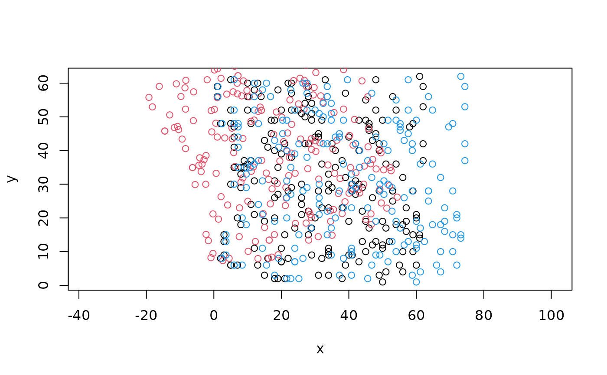

Transformations
Usage
# S4 method for class 'SpatialDataElement'
transform(x, i = 1, ...)
# S4 method for class 'SpatialDataElement'
sequence(x, t, ..., rev = FALSE)
# S4 method for class 'SpatialDataArray'
mirror(x, t = c("v", "h"), k = 1, ...)
# S4 method for class 'SpatialDataArray'
flip(x, k = 1, ...)
# S4 method for class 'SpatialDataArray'
flop(x, k = 1, ...)
# S4 method for class 'SpatialDataArray'
rotate(x, t, k = 1, ..., rev = FALSE)
# S4 method for class 'SpatialDataArray'
scale(x, t, ...)
# S4 method for class 'SpatialDataArray,numeric'
translation(x, t, ...)
# S4 method for class 'SpatialDataFrame'
rotate(x, t, ...)
# S4 method for class 'SpatialDataFrame'
scale(x, t, ...)
# S4 method for class 'SpatialDataFrame,numeric'
translation(x, t, ...)Arguments
- x
SpatialDataelement.- i
scalar integer or string; target coordinate space.
- ...
option arguments passed to and from other methods.
- t
transformation data; exceptions: for
mirror, controls whether to perform vertical or horizontal reflection; no data is needed forflip(v) andflop(h).- rev
flag; should transformation(s) be reversed?
- k
scalar index specifying which scale to use;
Infto use lowest available resolution; only applies toSpatialDataArrays (images, labels).
Examples
x <- file.path("extdata", "blobs.zarr")
x <- system.file(x, package="spatialdataR")
x <- readSpatialData(x, tables=FALSE)
# image
y <- x
image(y) <- scale(image(y), c(1, 1, 1/3))
dim(image(x))
#> [1] 3 64 64
dim(image(y))
#> [1] 3 64 64
# point
y <- x
point(y, "rot") <- rotate(point(y), 20)
point(y, "wide") <- scale(point(y), c(1.2, 1))
xy0 <- centroids(point(y))
xy1 <- centroids(point(y, "rot"))
xy2 <- centroids(point(y, "wide"))
plot(xy0[, c(1, 2)], asp=1)
points(xy1[, c(1, 2)], col=2)
points(xy2[, c(1, 2)], col=4)

# shape
y <- x
shape(y, "rot") <- rotate(shape(y), 5)
shape(y, "wide") <- scale(shape(y), c(1.2, 1))
shape(y, "left") <- translation(shape(y), c(-5, 0))
y["shapes", c("rot", "wide", "left")]
#> class: SpatialData
#> - images(0):
#> - labels(0):
#> - points(0):
#> - shapes(3):
#> - rot (5,circle)
#> - wide (5,circle)
#> - left (5,circle)
#> - tables(0):
#> coordinate systems(1):
#> - global(3): rot wide left